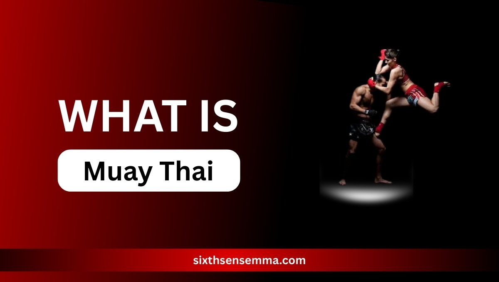
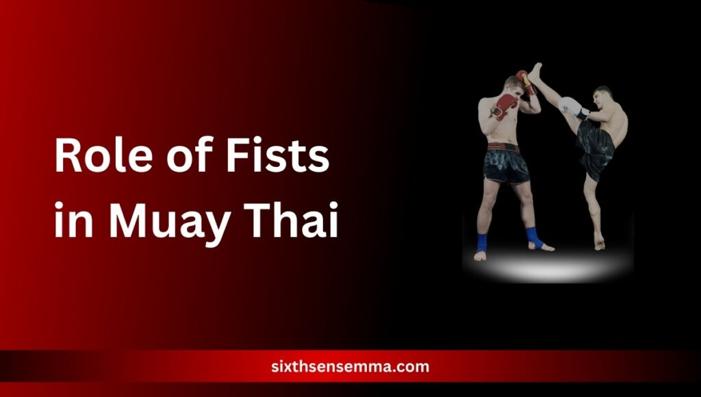

What Is Muay Thai? 8 Limb Technique To Boost Fitness

What Is Muay Thai? Muay Thai, also known as the ‘Art of Eight Limbs,’ is more than just a fighting sport—it’s an important part of Thailand’s culture. It uses eight different body parts—hands, elbows, knees, and legs—making it a strong and flexible way to fight. Unlike other martial arts that rely only on hands and feet, Muay Thai uses the entire body as a weapon, allowing for fluid movement, strategic offense, and solid defense. Its techniques are not just about power but about precision, balance, and timing, giving fighters an edge both inside and outside the ring.
Beyond combat, Muay Thai training is increasingly recognized for its ability to transform overall health. The intense sessions push the body to its limits, improving cardiovascular health, enhancing muscle strength, increasing flexibility, and boosting endurance. It also sharpens the mind, promoting focus, mental clarity, and stress relief. Whether you’re a seasoned athlete or a beginner looking for a dynamic workout, Muay Thai offers a path to total-body fitness while also teaching valuable discipline and resilience. In this blog, we’ll break down the 8 limb technique and highlight how integrating Muay Thai into your routine can lead to lasting improvements in both physical and mental well-being.
Ready to Master Muay Thai? Train Smarter at Sixth Sense MMA
If you’re inspired to harness the power of the 8 limbs and transform your fitness, Sixth Sense MMA is your ultimate partner in this journey. We mix classic Muay Thai moves with the latest training methods to help you reach your goals—whether you’re training to fight, learning to protect yourself, or just looking for a powerful workout.
What Are the 8 Limbs in Muay Thai?
Muay Thai is different from most martial arts because it uses eight strong weapons—your fists, elbows, knees, and shins. This unique combination is why it’s called the “Art of Eight Limbs.” Instead of relying on just punches or kicks, this system allows fighters to strike from almost any angle, at any distance.
Each limb has its own distinct role. Fists are used for quick punches, elbows for close-range damage, knees for midsection attacks, and shins for blocking and powerful kicks. This full-body engagement not only makes it a strong combat method but also promotes complete physical conditioning — building strength, agility, and coordination all at once.
Role of Fists in Muay Thai

In Muay Thai, fists play a key role and are often the base of many striking combinations. While the art is known for using all eight limbs, it’s often the fists that initiate movement, maintain distance, or create openings for more powerful strikes.
Muay Thai punches include jabs, crosses, hooks, and uppercuts.These are not only offensive tools but also help build rhythm, timing, and distance control—all of which are critical in both muay thai sparring and real competition.
Crosses
- The cross is more powerful, coming from the rear hand, delivering force through hip rotation.
- Repeating these movements develops speed, shoulder endurance, and punching accuracy—crucial for anyone engaged in muay thai pad work or muay thai bag work.
Uppercuts
- The uppercut is thrown upward, effective in close range and particularly useful in muay thai clinch scenarios.
- These punches build explosive power, activate the core muscles, and enhance muscle endurance.
Training with fists also improves hand-eye coordination, which translates to better performance in muay thai classes and real fight situations. Whether you’re working through muay thai drills, shadowboxing, or partner sparring, integrating punch combinations increases upper body strength, cardiovascular endurance, and reaction time.
Mastering punches in Muay Thai sharpens your technique, improves your fitness, and builds confidence, whether you’re in a muay thai gym, at a muay thai camp, or just adding variety to your muay thai fitness routine.
Also Read Our Article: Brazilian Jiu Jitsu Gi Basics: Types, Fit & Buying Tips
Elbow Techniques in Muay Thai
Elbows are among the most devastating weapons in Muay Thai, especially during close-range encounters. Unlike long-range strikes such as kicks or punches, elbow techniques are sharp, compact, and deliver immense force over short distances. When thrown correctly, an elbow can cause deep cuts, knockouts, or disrupt an opponent’s rhythm instantly.
In muay thai training, elbows are not just about aggression — they demand precision, body mechanics, and core control. Regular training of elbow techniques can significantly enhance rotational strength, body coordination, and upper-body mobility.
Common Types of Muay Thai Elbows
Horizontal and Diagonal Elbows: These strikes are effective at slicing through guards. Practicing these elbows strengthens torso rotation and develops core explosiveness.
Spinning Elbows: These are more advanced and unpredictable. They improve balance, coordination, and sharpen your sense of timing during a fight.
In muay thai classes, these strikes are practiced using pad work, shadowboxing, and controlled sparring to refine technique and increase comfort in real scenarios.
Benefits of Elbow Training
- Enhances core stability and shoulder mobility
- Builds upper-body flexibility through fluid motion
- Boosts short-range striking power, especially inside the muay thai clinch
- Improves reaction time and defensive counters
Elbows also play a strategic role in muay thai defense and muay thai offense. In tight exchanges, where kicks or punches may be hard to land, elbows allow you to stay dangerous and active. Whether you’re in a muay thai camp preparing for a fight or just attending weekly muay thai classes, focusing on elbows can give you a clear edge.
Power and Precision of Knees in Muay Thai
In Muay Thai, knee strikes are incredibly powerful, especially when used during a clinch.These strikes can disrupt an opponent’s core, draining their stamina and causing significant damage. Knee strikes require strong hip engagement, timing, and core stability, making them key to both offense and defense in Muay Thai.
Types of Muay Thai Knee Strikes
| Knee Type | Description |
|---|---|
| Straight Knees | Delivered in the clinch, targeting the ribs or stomach, they strengthen the quadriceps, hip flexors, and core. |
| Jumping Knees | A more aggressive strike that improves explosive power, agility, and balance. |
Fitness and Conditioning Benefits
- Builds leg strength and improves balance
- Develops core stability and hip flexibility
- Enhances footwork and kicking mechanics
Incorporating knee techniques into your muay thai workouts and drills will improve both striking power and endurance. Whether you’re training for competition or fitness, mastering knee strikes enhances your lower body strength.
Strength and Power of Shins in Muay Thai
Shin strikes are one of the most defining aspects of Muay Thai, and they play a pivotal role in both offensive and defensive techniques. The shin is utilized primarily in kicks, which are often aimed at an opponent’s torso, legs, or head. This striking style provides immense power, making it incredibly effective for breaking through defenses and controlling distance.
Unlike other martial arts, where kicks may be focused on the feet or lower legs, Muay Thai emphasizes using the shins, which requires rigorous training to build resilience and strength. This practice not only enhances strike effectiveness but also significantly reduces the risk of injury over time.
Types of Shin Strikes in Muay Thai
Roundhouse Kicks
One of the most widely known and used kicks in Muay Thai, the roundhouse kick involves rotating the body and using the shin to strike the opponent’s body or head. Regular training with roundhouse kicks strengthens the legs, improves flexibility, and enhances overall kicking power.
- Benefits: Strengthens leg muscles, boosts flexibility, enhances power in strikes.
Low Kicks
A low kick is typically aimed at the opponent’s thighs or knees, aiming to destabilize or wear down the opponent. Low kicks are vital for controlling distance and breaking an opponent’s balance. Practicing these kicks helps improve timing, targeting skills, and the ability to throw powerful strikes from a close range.
- Benefits: Improves precision, increases timing and control, strengthens the legs.
Fitness and Conditioning Benefits
- Leg Strength: Regular shin conditioning exercises improve muscle strength and joint stability, making the legs more resilient and powerful.
- Kicking Effectiveness: By conditioning the shin, you develop the kicking power necessary for both attacking and defending against an opponent’s strikes.
- Endurance: The repetitive nature of shin strikes helps develop stamina, allowing you to continue delivering powerful kicks throughout a Muay Thai sparring or competition.
Engaging in shin conditioning exercises during your Muay Thai training or workouts will gradually enhance your ability to deliver effective strikes. Incorporating pad work, bag work, and drills into your training helps improve the durability of the shins, making them a key weapon in your overall Muay Thai techniques.
Why Choose Sixth Sense MMA for Muay Thai?
At Sixth Sense MMA, we’re passionate about helping you unlock your potential—whether you’re chasing fitness goals, mastering self-defense, or stepping into the ring. Here’s what sets us apart:
Benefits of Training with Sixth Sense MMA
- World-Class Coaching
Learn from instructors with decades of experience in Muay Thai, many of whom have trained and competed in Thailand. Our coaches blend traditional techniques with cutting-edge fitness science to refine your strikes, clinches, and footwork. - Tailored Training Programs
No two fighters are alike. We design programs for all levels:- Beginners: Master fundamentals like jabs, teeps, and defense.
- Fitness Enthusiasts: Burn calories with high-intensity pad work and drills.
- Competitors: Sharpen fight IQ and conditioning for the ring.
- State-of-the-Art Facilities
Train in a professional, safety-focused environment equipped with:- Heavy bags, Thai pads, and ring spaces.
- Strength and conditioning zones for cross-training.
- Community & Camaraderie
Join a tribe of like-minded warriors. Our supportive culture keeps you motivated, whether you’re sweating through drills or celebrating a sparring breakthrough. - Holistic Growth
Muay Thai isn’t just physical—it’s mental. We emphasize discipline, focus, and resilience, skills that translate to everyday life. - Flexible Scheduling
With early morning, evening, and weekend classes, we make it easy to fit training into your routine.
Real Results: Reviews & Success Stories
Case Study 1: From Beginner to Fighter
Sarah, 28
“I started at Sixth Sense MMA with no prior experience in martial arts. In 12 months, I went from struggling with basic footwork to winning my first amateur fight. The coaches break down techniques step-by-step, and the community cheers you on every round. Best decision I’ve made!”.
Case Study 2: Fitness Transformation
James, 35
“I was feeling stuck in my gym routine until I gave Muay Thai a try here. The workouts are addictive—I’ve dropped 20 pounds, gained lean muscle, and actually look forward to training. Plus, the stress relief is unreal!”
Review: Family-Friendly Training
The Patel Family
“Our whole family trains at Sixth Sense MMA. The kids love the youth classes, and my wife and I do evening sessions. It’s our bonding time—and we’re all fitter, happier, and more confident!”
Ready to Start Your Journey?
Join the ranks of fighters, fitness lovers, and families who’ve transformed their lives at Sixth Sense MMA.
👉 Book a Free Trial Class
See why we’re the go-to destination for Muay Thai
Why This Works:
- Social Proof: Real stories build trust and relatability.
- Clear Value: Highlights practical benefits (coaching, flexibility, community).
- Action-Oriented: Ends with a low-commitment CTA (“Free Trial Class”).
- Tone: Energizing yet authentic, mirroring the article’s motivational vibe.
Fitness Benefits of Muay Thai
Engaging in Muay Thai training offers a wide range of health benefits, making it an excellent choice for individuals looking to improve their overall fitness. The mix of intense physical exercise, dynamic movements, and mental focus offers a well-rounded way to improve cardiovascular health, muscle growth, and mental strength. Here are the key benefits that you can gain from incorporating Muay Thai into your fitness routine:
| Benefit | Description |
|---|---|
| Cardiovascular Health | Continuous engagement in intense workouts helps in increasing the cardiovascular capacity, resulting in better stamina and reduced fatigue during physical activities. |
| Muscle Development | Muay Thai provides full-body workouts, working muscles in the arms, legs, core, and back. These workouts promote muscle growth, toning, and overall strength. Regular practice of techniques like punches, kicks, and elbow strikes helps in developing a strong, muscular physique. |
| Flexibility and Agility | Dynamic movements in Muay Thai, such as kicks, knees, and elbow strikes, increase flexibility and enhance overall coordination. As you work on your flexibility, your body will become more agile, improving movement efficiency and reducing the risk of injury. |
| Weight Management | The high intensity of Muay Thai workouts helps burn a large number of calories, supporting fat loss and weight management. Regular training can help you maintain a lean body while also improving muscle definition and endurance. |
| Mental Resilience | The mental toughness required in Muay Thai is one of its unique benefits. The discipline and focus required in each Muay Thai class not only boost physical fitness but also strengthen your mental resilience. Training teaches you to manage stress, build confidence, and stay motivated through challenging situations. |
Why Choose Muay Thai for Fitness?
The combination of high-intensity training, muscle development, and mental resilience makes Muay Thai a unique and effective way to boost your fitness levels. Whether you’re looking to improve your cardiovascular health, burn calories, or build muscle, Muay Thai offers a complete fitness solution that works on both the body and mind.
Incorporating Muay Thai into Your Fitness Routine
To fully benefit from Muay Thai, it’s important to take a structured approach. It’s not just a martial art but a holistic fitness system that enhances strength, flexibility, cardiovascular health, and mental resilience. Follow these key steps to maximize your Muay Thai training.
Find a Qualified Muay Thai Gym
Start by finding a Muay Thai gym with experienced instructors. A reputable gym should offer a range of classes and focus on technique, safety, and fitness.
Start with the Basics
If you’re new, begin with the fundamentals. Learn the basic Muay Thai punches, kicks, elbows, and knees, as well as key concepts like footwork and timing.Mastering the basics will make it easier to learn advanced techniques down the road.
Consistency is Key
For the best results, train consistently—ideally two to three times a week. Muay Thai requires regular practice to see significant improvements in strength, stamina, and technique. Stick with it, and you’ll notice progress over time.
Combine with Other Workouts for a Balanced Routine
Incorporate strength training and cardio to support and enhance your What Is Muay Thai? training. This can boost your overall performance and help you reach your fitness goals faster, improving your endurance and strength for more effective workouts.
Monitor Your Progress
Track your progress to stay motivated. Keep track of improvements in Muay Thai techniques, such as better footwork or more powerful strikes. Monitoring your progress in strength, endurance, and technique will keep you on track to achieving your goals.
Conclusion
Muay Thai’s 8 limb technique offers a comprehensive approach to fitness, blending physical prowess with mental fortitude. By engaging multiple muscle groups and emphasizing discipline, it stands out as an effective method to enhance overall health. Whether aiming to improve physical condition or seeking a new challenge, incorporating Muay Thai into your routine can lead to transformative results.
Train with us in Coppell
The first class is free. Shorts, a t-shirt and a water bottle. We lend the rest.
Book a free class